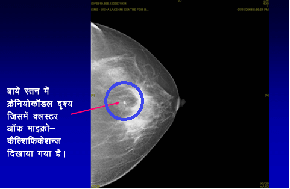

मैमोग्राम क्या होता है
मैमोग्राम (छाती का एक्स-रे) उन लोगों में किया जाता है जिन्होंने हाल ही में अपने स्तन में गांठ देखी हो/जिनके स्तन में हाल ही में बदलाव आया हो। विशेषज्ञ द्वारा स्तन का क्लिनिकल परीक्षण मैमोग्राम और स्तन का अल्ट्रासाउंड कर स्तन में रोग की पहचान लगाने में सहायता मिलती है।
डॉक्टर.. मुझें गांठ महसूस नहीं हो रही है। मुझे मैमोग्राम क्यों कराना चाहिए
स्क्रीनिंग मैमोग्राम क्या होता है
गांठ महसूस न होने वाले चरण जिसमें न तो महीला को और न ही चिकित्सक को स्तन में गांठ महसूस होती है उस अवस्था में स्तन कैंसर की जाँच करने के लिए मैमोग्राम (स्तन का एक्स-रे) किया जाता है। इस बात की सलाह दी जाती है कि 40 वर्ष की आयु से प्रति वर्ष एक बार स्क्रीनिंग मैमोग्राम कराना चाहिए।
मैमोग्राफी (स्तन का एक्स-रे) एक ऐसा सिद्ध प्रभावशाली तरीका है जिसके द्वारा स्तन कैंसर के प्रकट होने से कई वर्ष पहले स्तन कैंसर की पहचान की जा सकती है। स्तन कैंसर की शुरूआत में पहचान करने से उसका सफलतापूर्वक ईलाज करने की संभावना बढ़ जाती है जिसके कारण उत्तरजीविता में महत्वपूर्ण रूप से सुधार होता है।



क्या सभी आयु समूह में स्तन कैंसर स्क्रीनिंग प्रभावी होती है?
जबकि यह सभी उम्र की महिलाओं के लिए महत्वपूर्ण है कि वे “स्तन के प्रति जागरूक” रहें, स्तन की स्क्रीनिंग केवल उन महीलाओं में प्रभावी होती है जिनकी आयु 40 वर्ष से अधिक हो। महीलाएँ जिनकी आयु 40 वर्ष से कम है और जिनमें कोई लक्षण नहीं हैं उनमें नियमित रूप से कराई जाने वाली स्तन की स्क्रीनिंग अभी तक प्रभावी सिद्ध नहीं हुई है।
क्या मैमोग्राम कराना सुरक्षित है क्या इससे विकिरण का जोखिम होता है
वास्तव में मैमोग्राम कराना अधिक सुरक्षित होता है। मैमोग्राफी में कम मात्रा में विकिरण का उपयोग किया जाता है - इससे कारण स्वास्थ्य पर पड़ने वाला जोखिम बहुत कम होता है। मैमोग्राफी के दौरान आप पर जिस मात्रा में विकिरण का उपयोग किया जता है उसके मात्रा दांत में किए जाने वाले एक्स-रे के समान होती है।
क्या मैमोग्राफी पीड़ादायक होती है
मैमोग्राफी के कारण कुछ क्षणों के लिए परेशानी हो सकती है, यदि इसे योग्य प्रशिक्षित रेडियोग्राफर द्वारा किया जाता है तो इसे दर्दनाक नहीं होना चाहिए। डिजिटल मैमोग्राफी में और भी कम परेशानी होती है।
पारंपरिक मैमोग्राम और डिजिटल मैमोग्राम में क्या अंतर है
फूल फील्ड डिजिटल मैमोग्राफी एक क्रांतिकारी विकास है जिसमें स्तन की छवि को लगभग 5 सेकंड में बनाया जा सकता है (परंपरीक मैमोग्राम जिसमें चार से पाँच मिनट का समय लगता है)। स्तन कैंसर के सूक्ष्म परिवर्तन दिखाने में यह नई तकनीक मानक मैमिग्राफी की तुलना में अधिक प्रभावी है और यह विशेषकर उन युवा महीलाओं को उपयोगी है जिनके स्तन मोटे होते हैं। इसके अन्य लाभ हैं यह है कि पारंपरिक मैमोग्राम की तुलना में इसमें कम पीड़ा होती है और विकिरण का प्रभाव नगन्य होता है और इससे अधिक सटीक प्राप्त होते हैं जैसा कि ऊपर वर्णित किया गया है।
इसके अलावा, टेलीमेडिसिन सुविधाओं की उपलब्धता द्वारा, किसी और से राय लेने के लिए डिजिटल छवियों को विश्व में कहीं भी भेजा जा सकता है। चूंकि मशीन बहुत मंहगी है, इसलिए फूल फील्ड डिजिटल मैमिग्राफी भारत में व्यापक रूप से उपलब्ध नहीं है।
क्या स्तन कैंसर की पहचान करने में मैमोग्राफी 100% सटीक है
प्रारंभिक चरण में स्तन कैंसर की पहचान करने में मैमोग्राम सबसे प्रभावी तरीका है। अन्य स्क्रीनिंग परीक्षण की तरह, यह अचूक नहीं होता है। मैमोग्राफी की सटीकता लगभग 85%है। इसके कारण हैं
स्तन के एमआरआई के लिए क्या भूमिका है?
स्तन की नियमित स्क्रीनिंग या स्तन कैंसर से पीड़ित हर महीला का मूल्यांकन करने के लिए स्तन का एमआरआई कराने की सलाह नहीं दी जाती है।
हालांकि, यह कुछ विशिष्ट परिस्थितियों में अत्यधिक उपयोगी होता हैः